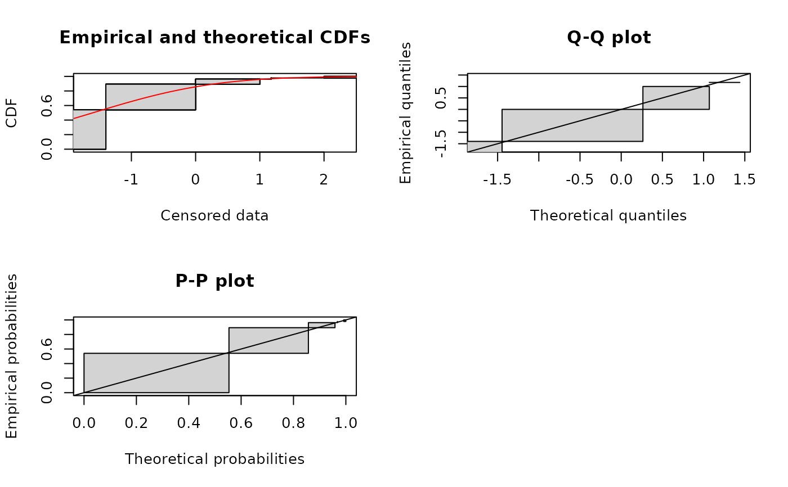
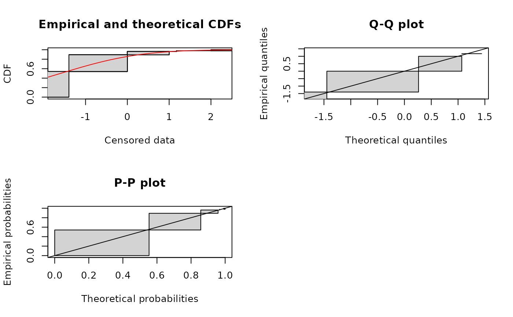
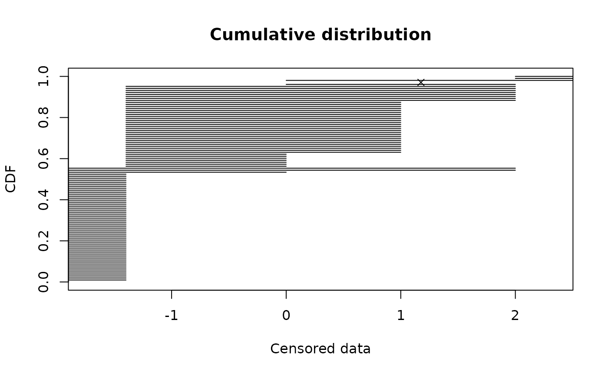
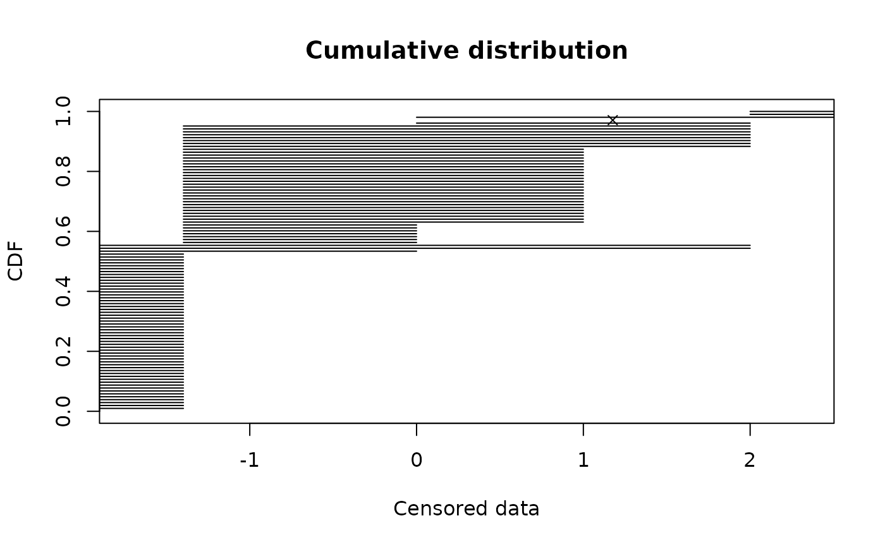

Plot of empirical and theoretical distributions for censored data
plotdistcens.RdPlots an empirical distribution for censored data with a theoretical one if specified.
Usage
plotdistcens(censdata, distr, para, leftNA = -Inf, rightNA = Inf,
NPMLE = TRUE, Turnbull.confint = FALSE,
NPMLE.method = "Wang", ...)Arguments
- censdata
A dataframe of two columns respectively named
leftandright, describing each observed value as an interval. Theleftcolumn contains eitherNAfor left censored observations, the left bound of the interval for interval censored observations, or the observed value for non-censored observations. Therightcolumn contains eitherNAfor right censored observations, the right bound of the interval for interval censored observations, or the observed value for non-censored observations.- distr
A character string
"name"naming a distribution, for which the corresponding density functiondnameand the corresponding distribution functionpnamemust be defined, or directly the density function.- para
A named list giving the parameters of the named distribution. This argument may be omitted only if
distris omitted.- leftNA
the real value of the left bound of left censored observations :
-Infor a finite value such as0for positive data for example.- rightNA
the real value of the right bound of right censored observations :
Infor a finite value such as a realistic maximum value.- NPMLE
if TRUE an NPMLE (nonparametric maximum likelihood estimate) technique is used to estimate the cdf curve of the censored data and previous arguments
leftNAandrightNAare not used (see details)- Turnbull.confint
if TRUE confidence intervals will be added to the Turnbull plot. In that case NPMLE.method is forced to
"Turnbull.middlepoints"- NPMLE.method
Three NPMLE techniques are provided,
"Wang", the default one, rewritten from the package npsurv using function constrOptim from the package stats for optimisation,"Turnbull.middlepoints", an older one which is implemented in the package survival and"Turnbull.intervals"that uses the same Turnbull algorithm from the package survival but associates an interval to each equivalence class instead of the middlepoint of this interval (see details). Only"Wang"and"Turnbull.intervals"enable the derivation of a Q-Q plot and a P-P plot.- ...
further graphical arguments passed to other methods. The title of the plot can be modified using the argument
mainonly for the CDF plot.
Details
If NPMLE is TRUE, and NPMLE.method is "Wang" ,
empirical distributions are plotted
in cdf using either the constrained Newton method (Wang, 2008)
or the hierarchical constrained Newton method (Wang, 2013)
to compute the overall empirical cdf curve.
If NPMLE is TRUE, and NPMLE.method is "Turnbull.intervals" ,
empirical are plotted
in cdf using the EM approach of Turnbull (Turnbull, 1974).
In those two cases, grey rectangles represent areas
where the empirical distribution function is not unique. In cases
where a theoretical distribution is specified, two goodness-of-fit plots
are also provided, a Q-Q plot (plot of the quantiles of the theoretical fitted
distribution (x-axis) against the empirical quantiles of the data) and a P-P plot
(i.e. for each value of the data set, plot of the cumulative density function
of the fitted distribution (x-axis) against the empirical cumulative density function
(y-axis)). Grey rectangles in a Q-Q plot or a P-P plot also represent areas of
non uniqueness of empirical quantiles or probabilities, directly derived from
non uniqueness areas of the empirical cumulative distribution.
If NPMLE is TRUE, and NPMLE.method is "Turnbull.middlepoints",
empirical and, if specified, theoretical distributions are plotted
in cdf using the EM approach of Turnbull (Turnbull, 1974)
to compute the overall
empirical cdf curve, with confidence intervals if Turnbull.confint is TRUE,
by calls to functions survfit and plot.survfit from the
survival package.
If NPMLE is FALSE empirical and, if specified, theoretical distributions
are plotted in cdf, with data directly reported as segments for interval,
left and right censored data,
and as points for non-censored data. Before plotting, observations are ordered and a rank r
is associated to each of them. Left censored observations are ordered
first, by their right bounds. Interval censored and non censored observations
are then ordered by their mid-points and, at last, right censored observations are
ordered by their left bounds. If leftNA (resp. rightNA) is finite,
left censored (resp. right censored) observations are considered as interval censored
observations and ordered by mid-points with non-censored and interval censored data.
It is sometimes necessary to fix rightNA or leftNA to a realistic
extreme value, even if not exactly known, to obtain a reasonable global ranking of
observations. After ranking, each of the n observations is plotted as a point (one x-value)
or a segment (an interval of possible x-values),
with an y-value equal to r/n, r being the rank of each observation in the global ordering
previously described. This second method may be interesting but
is certainly less rigorous than the other methods
that should be prefered.
References
Turnbull BW (1974), Nonparametric estimation of a survivorship function with doubly censored data. Journal of American Statistical Association, 69, 169-173.
Wang Y (2008), Dimension-reduced nonparametric maximum likelihood computation for interval-censored data. Computational Statistics & Data Analysis, 52, 2388-2402.
Wang Y and Taylor SM (2013), Efficient computation of nonparametric survival functions via a hierarchical mixture formulation. Statistics and Computing, 23, 713-725.
Wang, Y., & Fani, S. (2018), Nonparametric maximum likelihood computation of a U-shaped hazard function. Statistics and Computing, 28(1), 187-200.
Delignette-Muller ML and Dutang C (2015), fitdistrplus: An R Package for Fitting Distributions. Journal of Statistical Software, 64(4), 1-34.
Examples
# (1) Plot of an empirical censored distribution (censored data) as a CDF
# using the default Wang method
#
data(smokedfish)
d1 <- as.data.frame(log10(smokedfish))
plotdistcens(d1)
 # (2) Add the CDF of a normal distribution
#
plotdistcens(d1, "norm", para=list(mean = -1.6, sd = 1.5))

# (3) Various plots of the same empirical distribution
#
# default Wang plot with representation of equivalence classess
plotdistcens(d1, NPMLE = TRUE, NPMLE.method = "Wang")
# (2) Add the CDF of a normal distribution
#
plotdistcens(d1, "norm", para=list(mean = -1.6, sd = 1.5))

# (3) Various plots of the same empirical distribution
#
# default Wang plot with representation of equivalence classess
plotdistcens(d1, NPMLE = TRUE, NPMLE.method = "Wang")
 # same plot but using the Turnbull alorithm from the package survival
plotdistcens(d1, NPMLE = TRUE, NPMLE.method = "Wang")
# Turnbull plot with middlepoints (as in the package survival)
plotdistcens(d1, NPMLE = TRUE, NPMLE.method = "Turnbull.middlepoints")
# Turnbull plot with middlepoints and confidence intervals
plotdistcens(d1, NPMLE = TRUE, NPMLE.method = "Turnbull.middlepoints", Turnbull.confint = TRUE)
# same plot but using the Turnbull alorithm from the package survival
plotdistcens(d1, NPMLE = TRUE, NPMLE.method = "Wang")
# Turnbull plot with middlepoints (as in the package survival)
plotdistcens(d1, NPMLE = TRUE, NPMLE.method = "Turnbull.middlepoints")
# Turnbull plot with middlepoints and confidence intervals
plotdistcens(d1, NPMLE = TRUE, NPMLE.method = "Turnbull.middlepoints", Turnbull.confint = TRUE)
 # with intervals and points
plotdistcens(d1,rightNA=3, NPMLE = FALSE)

# with intervals and points
# defining a minimum value for left censored values
plotdistcens(d1,leftNA=-3, NPMLE = FALSE)
# with intervals and points
plotdistcens(d1,rightNA=3, NPMLE = FALSE)

# with intervals and points
# defining a minimum value for left censored values
plotdistcens(d1,leftNA=-3, NPMLE = FALSE)